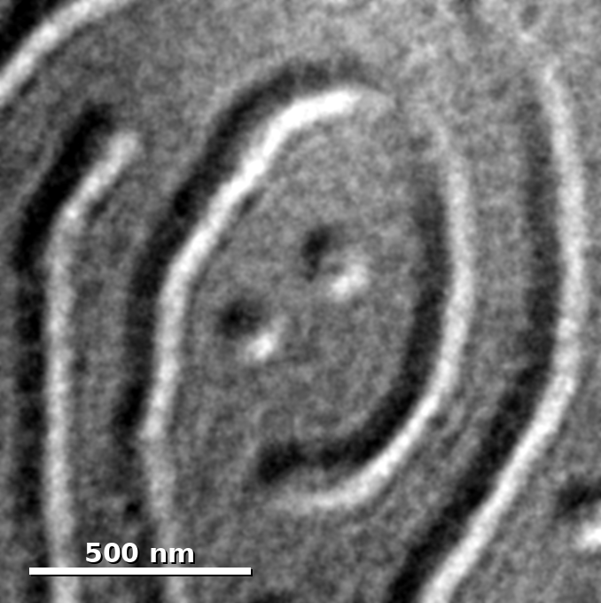

2D and quantum materials
How moiré patterns, strain and intercalation shape magnetic and electronic properties, starting with Fe3GaTe2.

2D and quantum materials, electron microscopy, beyond-CMOS devices
Research Intern at the Korea Institute of Science and Technology (KIST), Seoul
I study moiré patterns and magnetic textures in two-dimensional magnets with TEM and Lorentz TEM, and build the software that analyzes them. Before KIST, I spent two years at Samsung Electronics developing interconnects for a 1.4 nm logic node.
In my PhD, I want to take 2D and quantum materials from the microscope to the device.
Applying to PhD programs for Fall 2027


I am presenting a poster at the MRS Fall Meeting in Boston on December 2 and would be glad to meet you there.
How moiré patterns, strain and intercalation shape magnetic and electronic properties, starting with Fe3GaTe2.
TEM and Lorentz TEM analysis with software I build, from moiré strain maps and phase reconstruction to domain and skyrmion lattice statistics.
Bringing 2D and quantum materials into next-generation devices, building on my semiconductor R&D work at Samsung.
Stripe domains and skyrmion lattices across the moiré regions of a flake.
Lorentz TEM and moiré analysis tools, and a simulator that validates the moiré analysis.
Two projects: tuning magnetism with uniform tensile strain, and with lithium-ion intercalation.
J. Jang, M. Jang, H. Suh, K. Kim, J. W. Choi. Poster, MRS Fall Meeting 2026, Boston, Symposium QT01.
From the main project on moiré-modulated magnetic textures in Fe3GaTe2.
Quantum-material Spintronics Group, Center for Semiconductor Technology
Logic Technology Development Team, Semiconductor R&D Center
Materials Science and Engineering